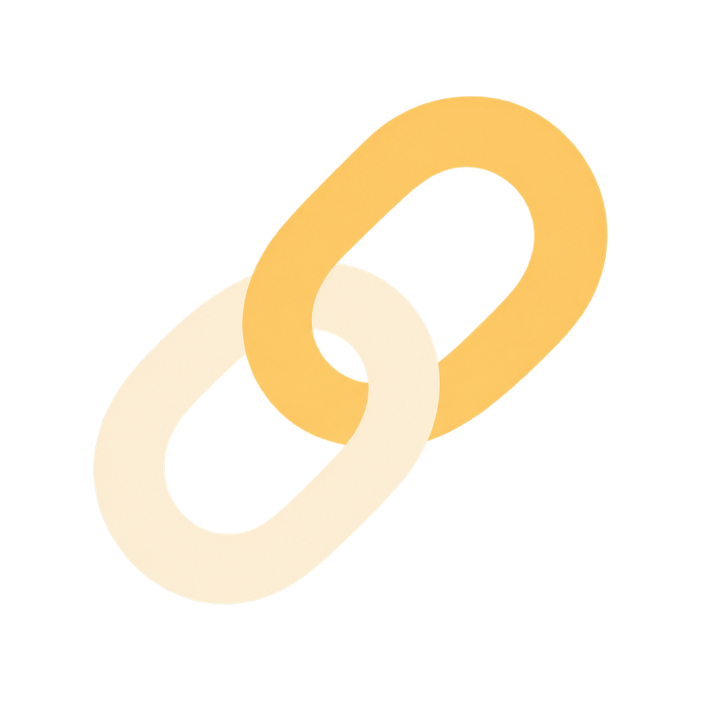

7 ideas shown · Select an idea to read it and reveal its direct links.
Read selected ideaSelect to inspect and explore. Arrow keys move the focused map.
- Evolution
- Conceptual connection
- Used as a source
You · Original capture · Links shown
Leave room for an answer I did not expect.
Starting idea · You · Links shown
I can ask without deciding in advance.
You · Original capture · More links
A question can make room for something I have not understood yet.
Read selected ideaYou · Contribution · Explore links
What did I miss before I listened?
AI · Interpretation · Explore links
A useful question lets the answer change its direction.
You · Original capture · Explore links
I can leave a question open without withholding my view.
AI · Interpretation · Explore links
A question can hold uncertainty open long enough for someone else to add what I could not see.
Questions before conclusions: 2 ideas added. New ideas may be outside the view. Use Fit map to see them.
Questions before conclusions
A question can make room for something I have not understood yet.
Open IdeaRecorded relationships
More direct links are available.
Parent, child, source or connection links may still be on later pages.

Developed from: Keep the question aliveDeveloped into: Make room for another answer

Used as a source for this idea: A question is not a verdictThis idea was used as a source for: Questions invite better disagreement

Conceptual connection · Supported by: Listening changes the questionListening keeps the question open to new information.
Conceptual connection · Extends: Room to disagree
Asking first leaves space for a different view.
Design comp only. Node, loading, camera and rejection controls are illustrative, not a working prototype. Open Idea continues to the existing reader for reject/restore actions.